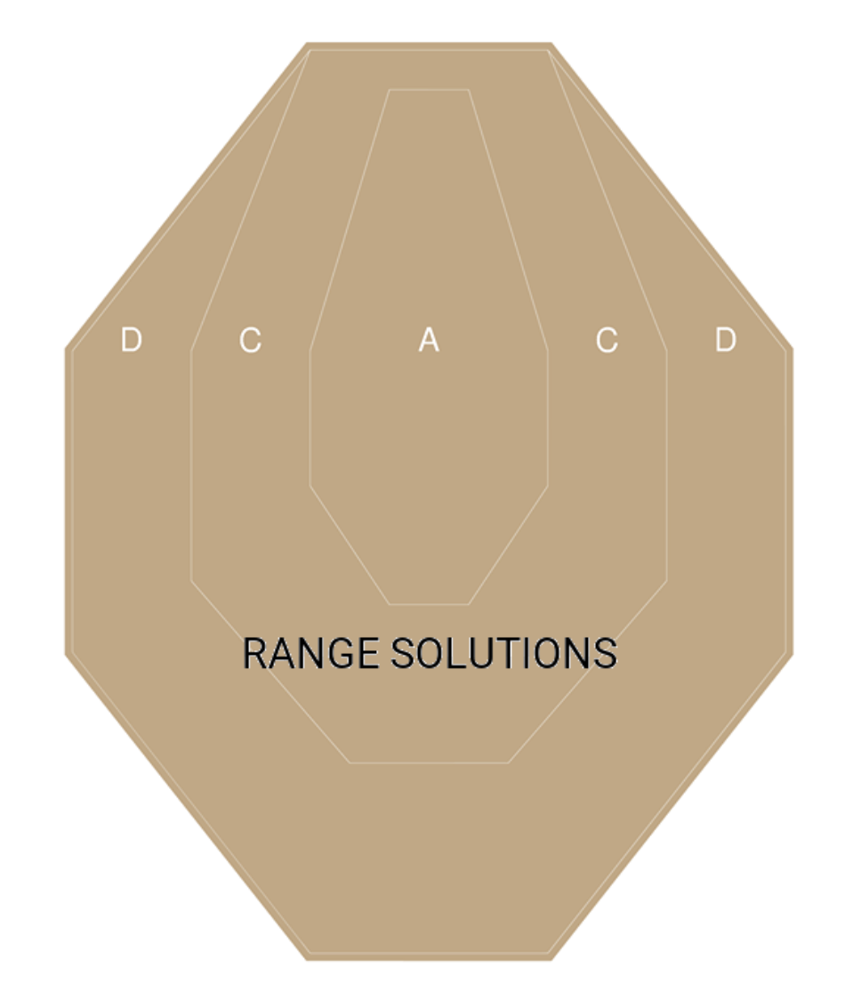

Делаем виджет с кастомной формой на Jetpack Compose с помощью Figma и AndroidVectors.
Недавно я делился своими мыслями о своем новом увлечении - стрелковый спорт. Погружаясь в дело, стало интересно отслеживать свой результат. Изучая тему, я столкнулся с тем, что приложений для трекинга не так уж много и они не покрывают необходимую мне функциональность. А самое главное - у них очень плохой UX. Все приложения предлагают вбивать очки вручную через input field, либо через кнопочки. А почему бы не сделать приложение, где в качестве input widget будет выступать сама мишень? Именно с решением такой проблемы я решил закрыть тему удобства для себя и написать приложение для подсчета hit factor в IPSC соревнованиях.
Задача
Создать виджет IPSC мишени с кликабельными зонами в альфа, чарли и дельта зонах, по клику на которые будут зачисляться очки - 5,3,1 соответственно. Штрафные баллы отличаются только классификацией, так что их можно оставить просто кнопками.

Решения
Начиная новый проект, я твердо решил идти по современным тенденциям и в параллели изучить “новый” фреймворк - jetpack compose. До него, решить такую проблему можно было бы с помощью кастомного рисования через canvas. А что же может предложить compose?
Да, у него тоже есть свободное рисование через Canvas. Но изначально задача стоит немного другая - нужны 3 кликабельные кнопки различной формы. Те нужно создать кнопки наложенные друг на друга. И такая возможность есть у compose.

Все что нам нужно - определить свою фигуру и передать ее в качестве аргумента нашей кнопке.
Если взглянем еще раз на исходные данные, все что нам нужно - создать 3 различные формы и отдать их на сьедение кнопкам:

У Shape есть различное количество вариаций для имплементаций. В моем же случае требуется найти то, в которую можно передать кривую/полигон - GenericShape:
class GenericShape(
private val builder: Path.(size: Size, layoutDirection: LayoutDirection) -> Unit
) : Shape {
override fun createOutline(
size: Size,
layoutDirection: LayoutDirection,
density: Density
): Outline {
val path = Path().apply {
builder(size, layoutDirection)
close()
}
return Outline.Generic(path)
}
}
Имплементация заставляет нас определить размер итоговой формы, не сложно, имеем дизайн. Остается закрыть последнюю задачу - как реализовать path.
Нужно задать координаты на плоскости и замкнуть их в path - те массив векторов - те полигон. Мы можем рассмотреть вариации набития таких векторов хардкодом и дальше заставлять каждого разбираться в потаемной магии. Но у андроида и векторной графики же есть свои стандарты хранения изображений. Достаточно же просто научится ее парсить и превращать фигма-дизайн в compose-widget.
Android vector
Каждый разработчик встречался с векторами на Android, но далеко не каждый разбирался в стандарте хранения данных:
<!-- Вектор сектора D -->
<path
android:pathData="M260.28,4H131.18L4,163.74V323.49L131.18,484H260.28L384.4,323.49V163.74L260.28,4Z"
android:strokeWidth="8"
android:fillColor="#C5A781"
android:strokeColor="#C5A781"/>
Интересует нас тут pathData и все циферки и буковки которые хранятся. На самом деле, большой магии тут нету. Есть 2 основные команды:
- moveTo - переместить курсор в определенную точку
- lineTo - перемещение с закрашиванием
Это основное, дальнейшие вариации - это только лишь модификация. За большими подробностями прошу нырнуть в эту статью, там все разжевано. Для нас нужно отделить команду M(moveTo) от всех остальных - L(lineTo), H(lineTo по горизонтали с одной переменной для оси Y), V(lineTo по вертикали с одной переменной для оси X), Z(нуль терминатор). Это все некая компрессия на уровне протокола. Все что нам остаётся - научить нашу программу в этот формат. Пишем парсер и….
Получаем следующую проблему - наши вектора заданы только в рамках заданного size. Хорошо, в очередной раз вспоминаем математику, добавляем множитель по длиннейшей стороне и получим итоговое нескукоженное изображение - форму.
internal fun Size.scaleToEtalon(etalonVectorSize: Size): ScaleFactor {
return if (this.width < height) {
(this.width / etalonVectorSize.width)
.let { scale -> ScaleFactor(scale, scale) }
} else {
(this.height / etalonVectorSize.height)
.let { scale -> ScaleFactor(scale, scale) }
}
}
Далее передаем scale factor в наш парсер и получаем результат:
internal fun drawPathFromPathData(
path: Path =Path(),
scaleFactor: ScaleFactor,
pathData: String,
offsetSize: Size =Size(0f, 0f),
): Path {
val list = pathData.split(PATH_DATA_PARSER_REGEX)
var lastKnownOffset =Offset(0f, 0f)
list.forEach{pathPart->
val startChar = try {
pathPart.toCharArray()[0]
} catch (aioobe: ArrayIndexOutOfBoundsException) {
return@forEach
}
val drawPathPattern = DrawPathPattern.parseKey(startChar) ?: return@forEach
when (drawPathPattern) {
DrawPathPattern.MOVE_TO-> {
val values = drawPathPattern.pattern.find(pathPart)?.groupValues ?: return@forEach
val x = values[3].toFloat()
val y = values[5].toFloat()
path.moveTo(scaleFactor = scaleFactor, x = x, y = y, offsetSize = offsetSize)
lastKnownOffset =Offset(x, y)
}
DrawPathPattern.LINE_TO-> {
val values = drawPathPattern.pattern.find(pathPart)?.groupValues ?: return@forEach
val x = values[3].toFloat()
val y = values[5].toFloat()
path.lineTo(scaleFactor = scaleFactor, x = x, y = y, offsetSize = offsetSize)
lastKnownOffset =Offset(x, y)
}
DrawPathPattern.HORIZONTAL_LINE_TO-> {
val values = drawPathPattern.pattern.find(pathPart)?.groupValues ?: return@forEach
val x = values[3].toFloat()
path.lineTo(scaleFactor = scaleFactor, x = x, y = lastKnownOffset.y, offsetSize = offsetSize)
lastKnownOffset = lastKnownOffset.copy(x = x)
}
DrawPathPattern.VERTICAL_LINE_TO-> {
val values = drawPathPattern.pattern.find(pathPart)?.groupValues ?: return@forEach
val y = values[3].toFloat()
path.lineTo(scaleFactor = scaleFactor, x = lastKnownOffset.x, y = y, offsetSize = offsetSize)
lastKnownOffset = lastKnownOffset.copy(y = y)
}
}
}
return path
}
private enum class DrawPathPattern(
val key: Char,
val pattern: Regex,
) {
MOVE_TO(
key = 'M',
pattern = "([A-Z](\\s)*)(\\d+(\\.\\d+)*),(\\d+(\\.\\d+)*)".toRegex(),
),
LINE_TO(
key = 'L',
pattern = "([A-Z](\\s)*)(\\d+(\\.\\d+)*),(\\d+(\\.\\d+)*)".toRegex(),
),
HORIZONTAL_LINE_TO(
key = 'H',
pattern = "([A-Z](\\s)*)(\\d+(\\.\\d+)*)".toRegex(),
),
VERTICAL_LINE_TO(
key = 'V',
pattern = "([A-Z](\\s)*)(\\d+(\\.\\d+)*)".toRegex(),
),
;
companion object {
fun parseKey(key: Char): DrawPathPattern? = values().firstOrNull{ it.key == key}
}
}
Полный gist.

Заключение
С помощью компоуз, уже сейчас, можно спокойно рисовать нестандартный дизайн для продакшена, тем самым экономив время. Я думаю, после моего ресерча, статья будет очень полезна, для реализации спецефичных виджетов, которые идут за рамки стандартного materiał design. Все что вам остается сделать - получить дизайн, скачать вектор, передать его парсеру и получить уникальную кнопку.
P. S. Я не оборачивал эти наработки в библиотеку, ну уверен, что в этом есть нужда. Если все-таки преобразование из vector XML в custom shape, кажется необходимым, отпишите в комментариях, обязательно сделаю решение в своём репозитории.